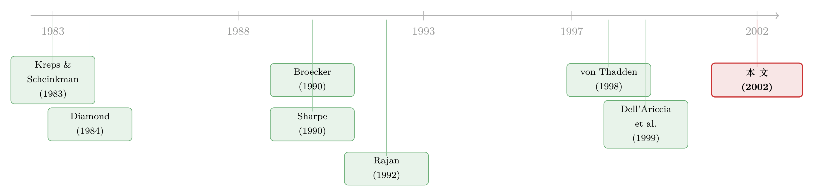

银行越多，借钱反而越贵？——一道藏在「信息分散」里的反直觉
本文读的是 Marquez (2002, Review of Financial Studies)：银行在放贷过程中积累的私有信息，会反过来塑造整个行业的结构。当竞争的银行越多，借款人信息就越「分散」——每家银行只认识更小的一拨客户，于是筛选能力下降，更多坏借款人拿到了贷款。结论很反直觉：由许多小银行组成的市场，均衡利率可能比由少数大银行组成的市场更高；而在位者的信息优势又会成为新进入者的门槛，只有当借款人流动性足够高时，进入才会发生。
1 一个让监管者头疼的悖论
先讲一件让政策制定者很为难的事。
二十世纪九十年代，两件大事几乎同时发生：欧盟在推进统一市场，银行业的跨境壁垒一道道被拆掉；美国则在放开对跨州设立分行的限制。两边的逻辑是同一个朴素的直觉——让更多银行进来竞争，借款人就能拿到更便宜的钱。这几乎是经济学的常识：竞争者越多，价格越低。
可现实却拧巴得很。一些关于欧洲的实证研究发现，即便监管壁垒几乎全被推倒，外资银行进入本地市场依旧难得出奇 [见 Hoschka (1993) 和 Vesala (1995)]；它们最后多半是通过兼并或收购一家本地银行才挤进去，而且主要去做批发和公司业务，几乎不碰零售。
于是一个自然的问题冒了出来：银行业的竞争，真的是「银行越多越激烈」吗？放开管制，借款人真的会受益吗？ 本文的回答是一个相当刺耳的「不一定」——而要讲清楚这个「不一定」，得先回到银行最古老的那项手艺：放贷的同时，悄悄地了解你。
2 银行的真正资产，是它「知道」什么
银行最核心的职能之一，是甄别（screening）：把有偿付能力的好借款人，从没有偿付能力的坏借款人里分出来。Diamond (1984) 那篇关于「委托监督（delegated monitoring）」的经典告诉我们，银行存在的理由，正是它替所有储户集中地去监督借款人。James (1987) 也给出过证据，说明银行贷款相比其他融资方式确有其「特殊性」。
但本文盯住的是这件事的一个隐秘后果：这些信息是在放贷的过程中产生的，而且是私有的（proprietary）、不可转让的。
想象一家银行给某个企业放了一笔款。放完之后，它就能看清这家企业到底是「好项目」还是「坏项目」——这是它独家掌握的情报，别的银行不知道。Sharpe (1990) 和 Broecker (1990) 这一脉文献早就指出：正是这种私有信息，让银行可以从老客户身上赚取超额利润，哪怕市场表面上是纯粹的价格竞争。
接着，一个关键的设定登场了：当银行们竞争新客户时，它们陷入了逆向选择（adverse selection）。 因为一家银行根本分不清，眼前这个来申请贷款的人，到底是市场上的新面孔，还是被竞争对手识别为「坏借款人」之后踢出来的二手货。
这就埋下了全文最妙的那根引线。
3 模型：把「信息」写成可以竞争的东西
本文搭了一个两期的利率竞争模型。设定不复杂，但每一条都为后面的反转服务，值得一步步看。
借款人。 第一期有一个规模标准化为 1 的连续借款人群体。每个借款人手里有一个项目，需要投入 \$1，以概率 \(\theta\) 产生现金流 \(R\)，以概率 \(1-\theta\) 产生 0。成功概率 \(\theta\) 事前谁都不知道，但它只有两种取值：
$$\theta \in \{\theta_l,\ \theta_h\},\qquad \theta_l<\theta_h,\qquad \Pr(\theta=\theta_h)=q.$$
关键的参数假设是：
$$\theta_l R<1<\theta_h R,$$
也就是说，给好借款人放贷是有效率的（\(\theta_h R>1\)），给坏借款人放贷则是亏的（\(\theta_l R<1\)）。再令平均成功概率为
$$\bar\theta=q\,\theta_h+(1-q)\,\theta_l,$$
并假设 \(\bar\theta R>1\)——事前看，「随便贷给一个人」平均而言仍是划算的。这一条很重要：它意味着如果完全无法甄别，银行宁愿把钱借给所有人，包括坏人。
银行。 有 \(N\) 家银行，每家有一个放贷能力上限 \(K^i\)（"lending capacity"），且总量受限：
$$\sum_{i=1}^{N}K^i\le 1.$$
为什么要给银行设一个「容量约束」？这是本文相比前人最实在的一处改造。一方面，这呼应了大量实证文献——Kashyap and Stein (1995)、Thakor (1996) 都发现银行的可贷资金确实有限、对外部冲击敏感；另一方面，正如 Kreps and Scheinkman (1983) 早就点破的，给企业加上容量约束，是在价格竞争（Bertrand）的框架里注入市场势力的标准手法。于是本文得以在「利率竞争」与「银行有点市场势力」之间取得平衡。
学习。 最核心的假设：一旦放了款，银行就学到了那个借款人的类型 \(\theta\)。
周转。 到了第二期，有一个比例 \(\varphi\) 的老借款人离开市场，由同样类型分布的新借款人补上。这个 \(\varphi\)——借款人周转率（borrower turnover）——是全文的灵魂参数，它后面会被解释成「银行间信息不对称程度」的一把标尺。
3.1 「自由市场」是怎样被坏借款人污染的
第二期开打。每家银行会做两件事：
- 把自己那些已知是坏的老客户（类型 \(\theta_l\)）全部踢出去——因为 \(\theta_l R<1\)，继续贷给他们注定亏钱；
- 用一个足够低的利率留住自己的好老客户，让对手抢不走。
被踢出去的坏借款人，连同新进场的、还有想换银行的人，混成一锅粥——本文管它叫自由市场（free market）。银行在这里没法分辨谁是谁。
现在来算这锅粥里有什么。对银行 \(i\) 来说，它在第一期服务了 \(K^i\) 的借款人，其中存活到第二期的占 \((1-\varphi)\)，这里面又有 \((1-q)\) 比例是坏的。于是它「吐」进自由市场的坏借款人数量是
$$\beta_i\equiv K^i(1-\varphi)(1-q).$$
而自由市场里「干净」的部分，是 \(\varphi\) 个新借款人，平均质量 \(\bar\theta\)。
到这里，逆向选择的结构就清清楚楚了：任何一家银行想在自由市场放贷，都不得不在「优质新客户」和「被同行扫地出门的坏客户」之间盲选。
3.2 一家银行能赚多少钱：本文的核心方程
假设银行 \(i\) 报出了严格最低的利率 \(r_i\)（即"赢家"），它会吸引到所有申请人，按比例分到好新客户和坏客户。它的自由市场利润是本文的式 (2)：
把这个方程读懂，全文就通了一大半。银行 \(i\) 放出去的每一笔贷款，要么命中一个平均质量 \(\bar\theta\) 的新人（赚），要么命中一个被同行筛出来的坏蛋 \(\theta_l\)（亏）。两者的比例，由 \(\varphi\)（新人多不多）和 \(\sum_{j\ne i}\beta_j\)（对手吐出来的坏客户多不多）此消彼长地决定。
注意 \(\beta_j\) 里那项 \(K^j\)：对手的容量越大，它筛过的人越多，吐进自由市场的坏客户也越多。 这正是「大银行 vs. 小银行」差异的根源——先记住这一点。
为了让分析落在有意思的区间（没有哪家银行能凭一己之力垄断整个市场），本文还要求最低价银行的容量是「绑定」的，对应式 (1)：
$$K^i<\frac{\varphi+K^i(1-\varphi)(1-q)}{1+(1-\varphi)(1-2q)},\qquad i=1,\dots,N.$$
3.3 为什么没有纯策略均衡
这里有个漂亮的小结论（命题 1）：这个利率竞争博弈不存在纯策略均衡，只存在混合策略均衡。
直觉是 Bertrand + 固定成本的老套路：如果对手用一个可预测的、固定的利率，我总能把价格压低那么一丁点儿，抢光整个市场。于是谁都不敢用确定的报价，大家只能随机化自己的利率。Broecker (1990) 和 von Thadden (1998) 在银行业里、Kreps and Scheinkman (1983) 在容量约束的价格竞争里，都见过这种「无纯策略」的现象。
但本文强调了一个更细的点：即便把容量约束设得很紧，纯策略均衡依然不存在——它纯粹是逆向选择效应造成的。 因为一家银行总能靠「压价」来改善自己申请人的质量分布（抢到更多好新客户），从而提高期望收益。这跟单纯的容量约束逻辑不一样，后者按理说会让一家已经满负荷的银行「没动力降价」。
4 反转：银行越多，借钱反而越贵
铺垫了这么久，现在抛出全文最反直觉的结论（命题 3）。
把所有银行设成对称的，每家容量 \(K^i=\tfrac1N\)，总容量恰好等于 1（总量上钱完全够，不缺资金）。然后问：当 \(N\) 越来越大（银行越来越多、每家越来越小），会发生什么？
命题 3： 若所有银行都参与竞标，则均衡中获得贷款的借款人的平均质量随 \(N\) 下降；并且当 \(N\to\infty\) 时，所有借款人都拿到了贷款——包括那些本不该被融资的坏人。
为什么？这就是本文标题里那个词——信息分散（information dispersion）。
银行越多，每家银行认识的客户就越少（只占 \(\tfrac1N\)）。自由市场里待融资的总池子大小没变，但每家银行能凭「自己过去的了解」筛掉的那部分坏借款人，占比缩小了。换句话说，当有很多小银行时，没有任何一家掌握足够的信息去把坏人挡在门外，于是越来越多的坏借款人混进了拿到贷款的队伍。极限情况 \(N\to\infty\)，每家银行的信息趋于零，市场退化成「无甄别」——而我们前面假设过 \(\bar\theta R>1\)，所以银行干脆贷给所有人。
接着是更刺耳的推论：既然更多坏借款人被融资，银行为了在均衡里不亏本，就得把利率定得更高来覆盖这些坏账。于是——
由许多小银行组成的市场，均衡的预期利率，可能比由少数大银行组成的市场更高。
这一下就把开头那个监管悖论解释通了。「银行数量」根本不是衡量市场竞争性的好指标。增加银行数量带来的不是更激烈的价格竞争，而是一种效率损失：甄别能力被稀释，坏项目搭了便车，账单最后摊到了所有借款人头上。
（关于「信息究竟是助力还是负担」这个主题，本博客另有两篇可对照着读：一篇讲专业化放贷里「信息越多、利率反而越低」的相反力量，见《信息越多，利率反而越低？》；一篇讲外资进来后本地银行手里「只剩坏客户」的逆向选择，见《银行的「信息」，凭什么是一道护城河？》。)
5 进入为什么这么难：在位者的「信息护城河」
讲完竞争，再回到开头那个「外资银行进不来」的谜。
本文的第二个主结论是：在位银行的信息优势，会给想进入的银行制造严重的麻烦。
把一家新进入者放到这个模型里：它没有任何老客户，因此也没有任何私有信息，更没有「从老客户身上赚的钱」来垫底。当它跳进自由市场跟在位者抢新客户时，它承受的逆向选择成本，和在位者是一样的；可在位者还能靠留住的好老客户赚一笔关系租金（relationship rent），新进入者却两手空空。这就形成了一种在位优势（incumbency advantage）。
那什么时候进入才会发生？答案藏在那个灵魂参数 \(\varphi\) 里。
周转率 \(\varphi\) 越高，在位者的信息优势就被侵蚀得越厉害。 因为高周转意味着老客户不断离场、新面孔不断涌入，在位者「认识老客户」这件事的价值就贬值了——大家越来越站在同一条起跑线上。于是本文预测：
- 进入更容易发生在借款人周转率高的市场；
- 或者发生在进入者本身具备特定信用评估专长的场合（它能自己快速生产信息，绕开劣势）；
- 否则，进入往往只能采取兼并/收购在位者的形式——一口气买下一个现成的客户群，把信息劣势直接抹平。
这恰好对上了 Hoschka (1993) 和 Vesala (1995) 观察到的欧洲现实：外资多半靠并购进场，且偏好公司/批发业务（信息劣势相对小）而非零售。本文在 Dell'Ariccia, Friedman, and Marquez (1999) 的「进入被封锁」结论之上，把容量与信息约束显式地装了进来，从而把「进入难易」与一个可观测的市场特征（周转率）挂上了钩。
（银行为什么愿意先亏本拉客、把「关系」当成可以盘算的资产，这条线本博客也有专文，见《银行为什么舍得先亏本拉客？》。）
6 文献脉络
这条研究的来路其实很清楚。最上游是 Diamond (1984)——银行作为「委托监督者」存在，天然要去生产关于借款人的信息。接着，Sharpe (1990) 和 Broecker (1990) 把这种私有信息写进竞争模型，说明它如何让银行赚取租金、并催生「赢家诅咒」式的逆向选择（von Thadden (1998) 后来把这一脉的「winner's curse」讲得更透）。Rajan (1992) 则从「内部人 vs. 外部人」的角度，分析了企业在「被了解」与「保持距离」之间的取舍，并指出企业向多家银行寻价会引出混合策略。

到了 Dell'Ariccia, Friedman, and Marquez (1999)，这一脉第一次正面处理「信息不对称下的进入」：在 Bertrand 竞争里，只要已有两家在位银行，进入就被封锁。本文（Marquez, 2002）正是站在这块石头上往前走了一步——它给银行加上容量约束和有限的信息基础，于是不仅能谈进入，还能把整个行业结构与盈利能力（银行数量、规模、周转率）一并内生出来，并干净地区分开「规模带来的利润」和「信息带来的利润」。
7 评论与延伸（Q&A + 研究方向）
(a) 几个可能的疑问
Q：「银行越多，利率越高」难道不违反最基本的竞争常识吗？
不违反——它只是提醒你，这里的「竞争」有两个相反的维度。数量增加确实强化了价格竞争（压低利率的力量），但同时稀释了每家银行的信息（恶化甄别、抬高坏账的力量）。本文说的是后一种力量在这个设定里可能占上风，于是净效应是利率上升。它否定的不是竞争本身，而是「用银行数量去度量竞争性」这件事。
Q：模型假设银行完全分不清新借款人和被拒的老借款人，这是不是太极端了？征信记录不是到处都有吗？
本文专门回应过这一点。即便允许银行在放贷前查阅申请人的征信记录，只要这种查阅有一个「每户成本」，结论在定性上就不变：对借款人现在的银行来说，这笔信息成本早已沉没，于是它相对竞争对手仍有成本优势——对新进入者更是如此。另外，征信信息本身是否可得，也是一个内生的均衡现象 [Padilla and Pagano (1997)]。
Q：为什么非要给银行加「容量约束」？去掉它会怎样？
两个理由。其一是实证的：Kashyap and Stein (1995)、Thakor (1996) 都表明银行可贷资金确实有限。其二是技术的：按 Kreps and Scheinkman (1983)，容量约束是把市场势力注入 Bertrand 模型的标准手法，让模型既保留利率竞争、又允许银行有租金。更关键的是，容量在这里和「信息基础」直接挂钩——你放了多少款，就认识多少人。
Q：既然没有纯策略均衡，混合策略的利率分布该怎么解释？
本文给了一个接地气的解读（致谢里说是 Holmström 的建议）：随机化对应的是银行就利率与每个借款人分别讨价还价的过程。我们于是应当观察到的，是横跨整个借款人群体的一个利率分布，而不是单一的报价。Rajan (1992) 也描述过企业向多家银行寻求密封报价、从而导出混合策略的情形。
Q：放开管制到底是好是坏？本文给了确定答案吗？
没有，而且它故意不给。本文的贡献恰恰是指出福利效应是模糊的：进入可能带来效率损失（更多坏项目被融资），从而抬高利率，抵消甚至盖过竞争本身的好处。所以「金融一体化是否提升借款人剩余」是一个需要看参数（尤其是周转率）的经验问题，而非先验的「越开放越好」。
Q：这套逻辑能搬到金融科技/大数据放贷上吗？
可以，但要小心方向。本文的机制是「信息私有且不可转让」。金融科技恰恰可能在两端同时发力：一方面让信息更易生产（削弱在位护城河、利于进入），另一方面又可能制造新的数据垄断（强化在位者）。这正是 Hauswald-Marquez 一脉（IT 与放贷竞争）想回答的问题，本博客也讨论过同一场技术革命「把利率推向两个相反方向」的可能，见《同一场技术革命，为什么把利率推向了两个相反的方向？》。
(b) 几个可能的研究问题与提案
1. 用一次跨州分行放开，去检验「银行数量↑ ⇒ 利率↑」的反直觉预测。 【经济故事】本文给出了一个干净的、可证伪的横截面预测：在信息不对称更重要（周转率低、关系型放贷为主）的地方，新银行进入反而抬高利率。【可行性】中。美国 1990s 的跨州分行放开（IBBEA 时间表各州不同）提供了交错冲击；数据上可用 Call Reports 的贷款利率与 HMDA/小企业贷款。识别要靠州×时间的交错 DiD，但要警惕近年关于交错 DiD 的批评（见《当「更稳健」的设计悄悄把符号弄反了》）。
2. 把「周转率 \(\varphi\)」搬到公司债一级市场，检验它对进入与定价的作用。 【经济故事】发行人「周转」越快（频繁有新发行人入场、老关系贬值），承销商的信息护城河越浅，新承销商越容易进入、利差越低。这正是本文逻辑在债市的镜像。【可行性】中。Mergent FISD + 承销商身份可构造发行人周转与承销商集中度；难点是周转率的外生性，可借行业进入/退出潮做工具。
3. 外资银行进入与本地信贷质量：信息分散是否真的恶化了甄别？ 【经济故事】本文预测外资（信息劣势方）进场后，会加剧逆向选择、让更多坏借款人获得融资。能否在新兴市场银行业开放事件里，直接看到「进入后违约率上升、利率上升」？【可行性】中偏低。需要贷款层面的违约数据 + 清晰的开放冲击；可优先找有信贷登记（credit registry）的国家（如本博客提到的 Information and Bank Credit Allocation 那类设定）。
4. 把「容量约束」内生化：当资本/存款冲击改变信息基础时会怎样？ 【经济故事】本文把 \(K^i\) 当外生。但容量本身随资本要求、存款流动而变，而容量又决定了银行认识多少客户。一次资本冲击因此既改变放贷规模、也改变信息禀赋——两条渠道纠缠在一起。【可行性】中。可在本模型上加一期资本/存款冲击做理论扩展；实证上用监管资本变更或存款外流事件分离两条渠道。
5. 流动性视角：信息分散是否也分散了二级市场的流动性？ 【经济故事】如果每家中介只「认识」一小撮资产/客户，那么在压力时刻，谁也接不住别人手里的头寸——信息分散可能转化为流动性的脆弱。这把本文的「甄别」逻辑延伸到做市与流动性供给。【可行性】低偏中。需要把单期甄别模型扩成带二级市场的多期模型，识别较难，但概念上与公司债流动性危机的研究天然相邻。
8 我的判断
贡献。 这篇论文的价值，不在于复杂的技术，而在于它用一个极简的设定，把一个被广泛误用的政策直觉（「银行越多越好」）干净地掀翻了。它把「信息」真正当成一种会随竞争结构而稀释的资产，从而同时解释了三件看似无关的事：为什么数量不等于竞争性、为什么进入这么难、为什么放开管制的福利后果是模糊的。把「周转率」提炼成一把可观测的「信息不对称标尺」，是全文最聪明的一笔。
对识别（理论自洽性）的担忧。 这是纯理论文，没有实证识别问题，但有几处设定上的软肋值得记着：其一，「银行完全无法区分新客户与被拒客户」是个很强的假设，作者虽辩护说加上有成本的征信查阅不改变定性结论，但在征信高度发达的今天，定量上的力量可能被大大削弱。其二，模型本质是静态的（两期只是叙述方便），它刻意没有建模第一期的竞争，也没有动态的信息共享激励——而 Padilla and Pagano (1997) 提示，信息共享在动态框架里会内生地出现，这可能反过来侵蚀本文的核心机制。其三，「容量约束」虽有实证支持，但把它设成外生，等于假定了「规模」与「信息」的捆绑关系，而这层关系本身或许才是更该被解释的东西。
后续想看到什么。 最想看到的是有人把那个干净的反直觉预测——「在信息越重要的市场，进入越会抬高利率」——拿到真实的放开管制数据里去检验，并诚实地处理周转率的内生性。其次，我很好奇当把这套「信息私有且不可转让」的逻辑放进金融科技时代，是会被数据共享技术瓦解，还是会以「数据垄断」的新形态复活。这恰恰是这篇 2002 年的论文，留给二十多年后读者的那个真正开放的问题。
参考文献
- Broecker, T. (1990). Credit-Worthiness Tests and Interbank Competition. Econometrica 58(2), 429–452.
- Dell'Ariccia, G., Friedman, E., and Marquez, R. (1999). Adverse Selection as a Barrier to Entry in the Banking Industry. RAND Journal of Economics 30(3), 515–534.
- Diamond, D. (1984). Financial Intermediation and Delegated Monitoring. Review of Economic Studies 51(3), 393–414.
- James, C. (1987). Some Evidence on the Uniqueness of Bank Loans. Journal of Financial Economics 19(2), 217–235.
- Kashyap, A., and Stein, J. (1995). The Impact of Monetary Policy on Bank Balance Sheets. Carnegie-Rochester Conference Series on Public Policy 42, 151–195.
- Kreps, D., and Scheinkman, J. (1983). Quantity Precommitment and Bertrand Competition Yield Cournot Outcomes. Bell Journal of Economics 14(2), 326–337.
- Marquez, R. (2002). Competition, Adverse Selection, and Information Dispersion in the Banking Industry. Review of Financial Studies 15(3), 901–926.
- Padilla, A. J., and Pagano, M. (1997). Endogenous Communication Among Lenders and Entrepreneurial Incentives. Review of Financial Studies 10(1), 205–236.
- Rajan, R. (1992). Insiders and Outsiders: The Choice Between Informed and Arm's-Length Debt. Journal of Finance 47(4), 1367–1400.
- Sharpe, S. A. (1990). Asymmetric Information, Bank Lending, and Implicit Contracts: A Stylized Model of Customer Relationships. Journal of Finance 45(4), 1069–1087.
- Thakor, A. (1996). Capital Requirements, Monetary Policy, and Aggregate Bank Lending: Theory and Empirical Evidence. Journal of Finance 51(1), 279–324.
- von Thadden, E.-L. (1998). Asymmetric Information, Bank Lending and Implicit Contracts: The Winner's Curse. Working paper, Université de Lausanne.